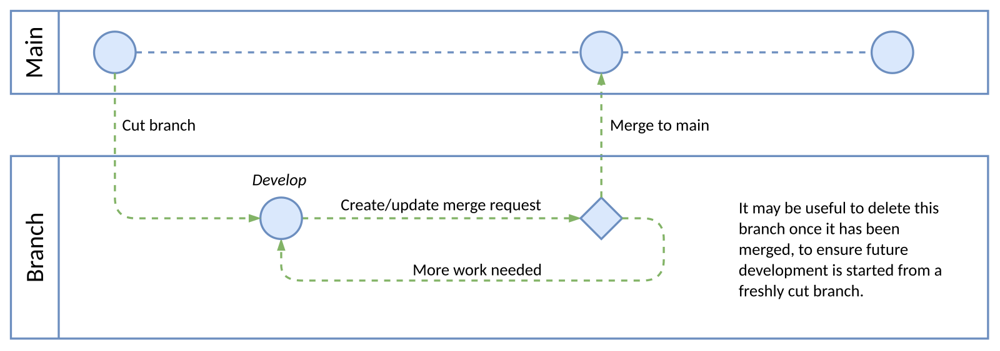

The Role and Importance of a README File
A README file serves as an introduction and guide to a project. It provides essential information about what the project does, how to install or use it, and any requirements or dependencies it may have. It often includes instructions for contributing, troubleshooting, and contact details for the author or team. Essentially, a README helps other developers, collaborators, or users understand the purpose, setup, and structure of the project without having to dig through the code. It’s the first place someone looks to get oriented, making it an important part of good documentation.
Read more

Understanding the Purpose of a Wireframe
A wireframe is a simple visual layout that outlines the structure and functionality of a webpage or application before the actual design and coding begin. It focuses on the placement of elements like headers, images, buttons, and text—rather than colors or detailed visuals. Designers and developers use wireframes to plan how users will navigate and interact with the interface, ensuring that everything is logically organized. In short, a wireframe helps turn ideas into a clear, structured plan that guides the entire design process.
Read more

Exploring Branches in Git
A branch in Git is like a separate workspace where developers can make changes to a project without affecting the main version of the code. It allows multiple people to work on different features, bug fixes, or experiments simultaneously. Once a branch's changes are tested and ready, they can be merged back into the main branch—usually called “main” or “master.” Branching makes collaboration safer and more efficient, since it prevents conflicts and helps keep the main project stable while still allowing active development to continue.
Read more